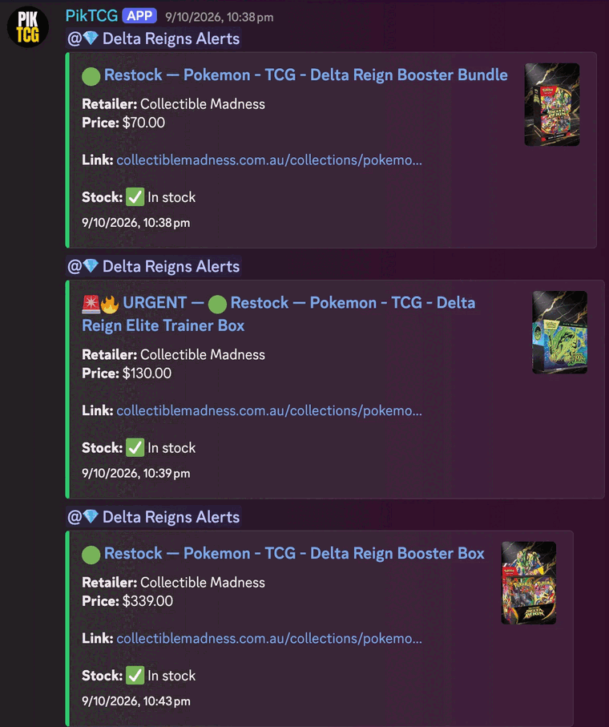
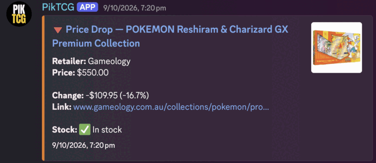
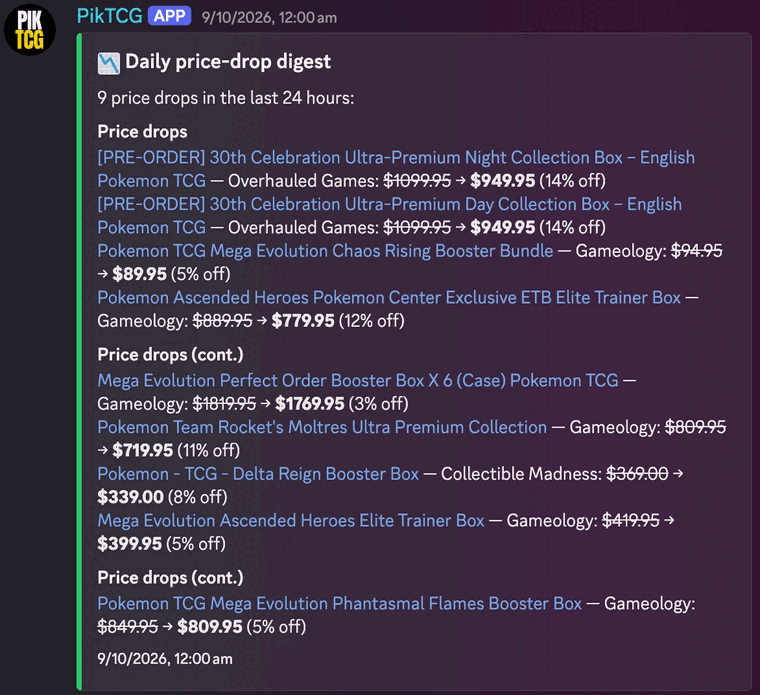
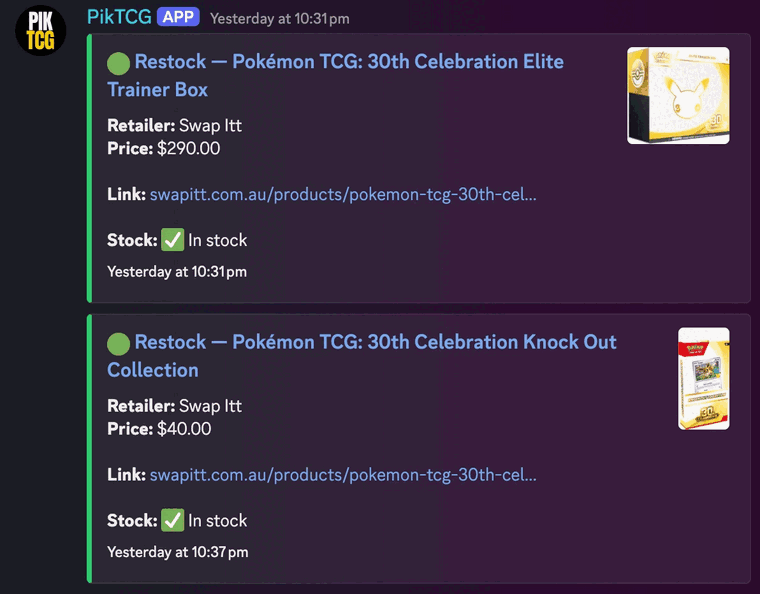
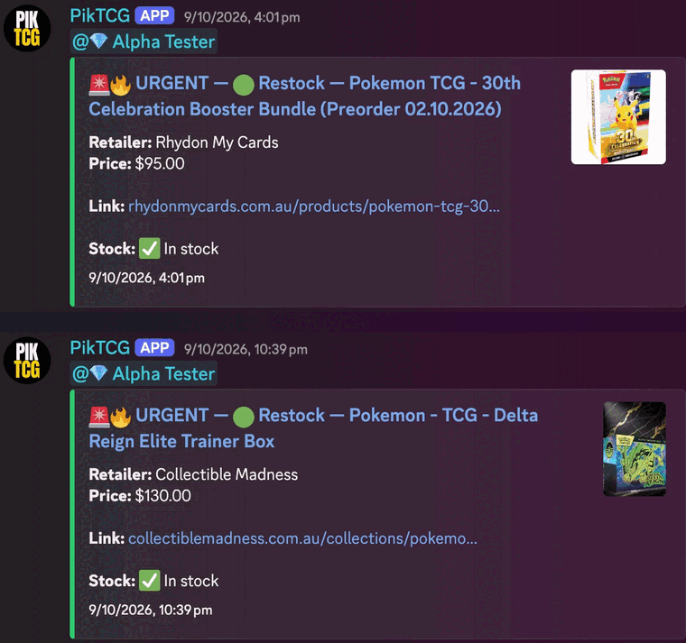
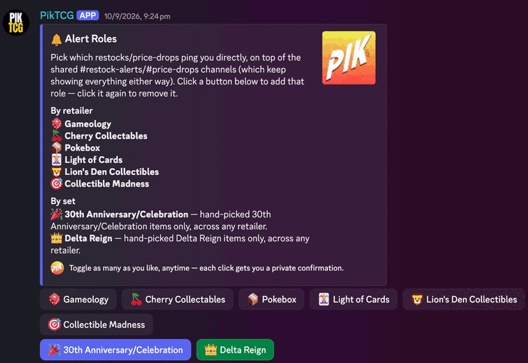

PikTCG
A Discord-first bot that monitors 20+ Australian Pokémon TCG retailers for restocks and price drops in real time, built on a two-tier polling system designed to stay fast without tripping anti-bot defenses.
Overview
Pokémon TCG restocks for hyped sealed product (booster boxes, Elite Trainer Boxes) often sell out within minutes of going live, and scalpers running their own monitoring tools get there first. PikTCG exists to level that: a Discord bot that checks tracked listings across Australian retailers and posts the moment something restocks or drops in price, before most people would think to check.
It started as a scoped MVP, not a prototype. Before writing the ingestion code, I wrote a product requirements doc, user personas, and a deliberately narrow 30-day MVP scope (sealed-product monitoring only, no marketplace, no billing yet) to avoid building toward an imagined feature set instead of a real one.
My role, and how AI fits into this
I built this directing Claude Code as my day-to-day pair programmer, and I want to be specific about what that means rather than vague about it. I made the architecture decisions: the two-tier polling split, which anti-bot strategy to use per retailer, the rate-limit backoff design, the decision to fail loudly instead of guessing at missing data. Claude Code wrote a large share of the actual implementation and tests under that direction, and did a meaningful share of the investigative work too, things like diagnosing a Railway deployment failure down to a missing shared library in the runtime image, or working out from a captured page which of two different price sources on a Next.js page to trust.
I treat it as a fast, capable collaborator I'm responsible for reviewing and understanding every line from, not a black box. Every claim in the "Challenges" section below is something I can walk through in detail, because I had to actually understand it to direct the fix.
Architecture
Ingestion is split by how each retailer's site actually works, discovered per-retailer rather than assumed, then normalized behind one adapter interface. Everything downstream (polling, rate limiting, alerting) doesn't know or care which adapter strategy produced a given price/stock reading.
Data model
Postgres via Prisma, centered on Retailer, Product, RetailerProduct (one product tracked at one retailer, with its own URL/external ID), and PriceSnapshot (one row per observation). A pure detectChange() function diffs the latest snapshot against the previous one to classify RESTOCK / OUT_OF_STOCK / PRICE_DROP / PRICE_INCREASE, kept separate from the fetching/polling code so it's trivially unit-testable without a network call or a database.
export function detectChange(
previous: DetectableState | null,
current: DetectableState,
): ChangeType | null {
if (!previous) return null;
if (!previous.inStock && current.inStock) return "RESTOCK";
if (previous.inStock && !current.inStock) return "OUT_OF_STOCK";
if (current.inStock && current.price < previous.price) return "PRICE_DROP";
if (current.inStock && current.price > previous.price) return "PRICE_INCREASE";
return null;
}
// Only these two are worth pinging a human about — the rest are still
// recorded in price_snapshots history but don't fire a Discord alert.
export const ALERTABLE_CHANGE_TYPES: ReadonlySet<ChangeType> = new Set([
"RESTOCK",
"PRICE_DROP",
]);
Key features
The core loop is restock/price alerts, but the bot has grown into the main channel the community runs through. Everything here is a real, shipped feature, not a roadmap item.
Restock & price-drop alerts
Posts the moment a tracked listing comes back in stock or drops in price, across 22 configured retailers.
Urgent polling tier
A capped set of high-priority listings get checked on a jittered ~12s cycle instead of the regular multi-minute one.
Price history
Every observation is kept as a snapshot row, so /pricehistory can chart a listing's real price movement over time, not just its current value.
Cross-retailer alert channels
A listing can be tagged into a named channel (e.g. a specific set) so alerts for it post somewhere more targeted than the general feed.
Daily price-drop digest
A scheduled daily summary of price drops, on top of the real-time alerts, for anyone who doesn't want to watch the feed live.
Per-retailer operational controls
Any retailer can be paused or have its poll interval overridden without a deploy, for when a retailer is temporarily unreliable or newly added.
Instagram & TCG news feeds
Separate background triggers post new Instagram uploads and TCG news into their own channels, independent of the restock pipeline.
Pokémon GO event digest
A scheduled digest of upcoming Pokémon GO events, posted to its own channel, serving the overlap between the two communities.
"Product removed" notices
When a tracked URL starts 404ing, the bot posts one notice to an internal ops channel, once, rather than repeating it every poll cycle forever.
Test-alert preview
/pricedrop renders a real alert embed on demand without needing to wait for (or fake) an actual price change, useful for reviewing formatting changes.
Self-serve alert roles
A persistent role-menu message lets members toggle direct pings by retailer or by set, on top of the shared alert channels, no admin involvement needed.
Commands
14 slash commands, grouped roughly by who uses them: everyday tracking commands for the community, and operational commands for running the retailer list day to day.
| Command | Description |
|---|---|
/track | Start tracking one or more sealed product listings. |
/tracked | List everything currently being tracked, with images. |
/search | Search tracked products by name and get the results in a DM. |
/pricehistory | Price history for a tracked listing (by URL) or every listing matching a name (in a DM). |
/pricedrop | Force-post a test price-drop alert for a URL, to preview the embed. Posts nothing real. |
/currentretailers | List every retailer PikTCG currently tracks. |
/retailer-pause | Pause (or resume) all polling, regular and urgent, for one retailer. |
/retailer-set-interval | Override how often one retailer's regular poll runs, separate from the urgent tier. |
/alert-channel-set | Tag (or untag) a tracked URL into a cross-retailer alert channel (e.g. a specific set). |
/urgent-set-url | Mark (or unmark) an already-tracked URL for fast urgent polling. |
/urgent-remove-url | Un-flag one already-urgent URL, with a reason (e.g. "scalper price"). |
/urgent-clear-retailer | Un-flag all urgent listings for one retailer at once. |
/urgent-currentlist | List everything currently flagged for fast urgent polling. |
/ping-set-url | Ping the alpha tester role for this URL's alerts even on the regular, non-urgent, polling schedule. |
Live in Discord
Real alerts from the production bot, not mockups.




detectChange() classifies a listing as RESTOCK.
/ping-set-url-flagged listings ping a role directly the moment the fast poller catches them.
Challenges
1. No single scraping strategy works across every retailer
Four different retailer platforms needed four different approaches, each confirmed against a real response before being trusted, not assumed from documentation. Shopify stores expose a /products/{handle}.js endpoint built for the storefront's own JS to check live price/stock, found the hard way after the similarly-named .json REST endpoint turned out to silently omit the available field entirely. WooCommerce stores have a clean Store REST API. A Square Online storefront turned up a well-structured JSON product endpoint via its DevTools network tab. And two retailers (EB Games, BIG W) run real bot-management that fingerprints the client itself, not just request headers, blocking even a realistic fetch() with full browser headers, those two needed an actual headless Chromium instance via Playwright.
export interface RetailerAdapter {
/** Must match a Retailer.slug row in the database. */
slug: string;
fetchListing(target: ListingTarget): Promise<ListingSnapshot>;
}
export class AdapterFetchError extends Error {
public readonly status?: number;
public readonly retryAfterSeconds?: number;
/** Set on a 200 response whose body is a bot-challenge page, not real
* data — confirmed real against Mystical Merchants (SiteGround
* Security's CAPTCHA redirect, served with a 200, not a 403/429). */
public readonly blocked?: boolean;
constructor(
public readonly retailerSlug: string,
public readonly target: ListingTarget,
message: string,
options?: AdapterFetchErrorOptions,
) {
super(`[${retailerSlug}] ${message} (${target.url})`, options);
this.name = "AdapterFetchError";
this.status = options?.status;
this.retryAfterSeconds = options?.retryAfterSeconds;
this.blocked = options?.blocked;
}
}
2. Fast alerts without tripping anti-bot defenses
Hyped restocks need checking far more often than a comfortable background poll rate allows, but checking too often is exactly what gets an IP rate-limited or blocked. The fix was a two-tier poller: a slow regular cycle across everything tracked, and a separate fast ~12-second tier for a small, deliberately-capped set of "urgent" listings, sharing one rate limiter so a block on either tier backs off both.
Backoff starts at 1 minute and doubles on each repeated block up to a 15-minute cap, or uses the retailer's own Retry-After header when it sends one. The urgent tier's interval is randomized ±20% rather than fixed, a real visitor doesn't reload a page every exactly 12.000 seconds, and that mechanical regularity is itself a detection signal independent of raw request volume. For the one retailer needing a real browser, the adapter reuses a single persistent browser context across checks instead of a fresh session each time, since a new anonymous session hitting the same page every 12 seconds forever reads as more bot-like than one returning session checking repeatedly.
function scheduleNext(): NodeJS.Timeout {
const jitterMs = baseMs * JITTER_FRACTION * (Math.random() * 2 - 1);
const delayMs = Math.max(0, baseMs + jitterMs);
return setTimeout(() => {
void pollUrgentListings(adapters, handlers).finally(() => {
handle = scheduleNext();
});
}, delayMs);
}
The regular and urgent tiers share one rate limiter, keyed by retailer, so a block triggered by either tier backs off both. Backoff is exponential, capped, and triggered by either an explicit HTTP status or a "soft block", a 200 response whose body is actually a CAPTCHA/challenge page with no error status at all.
const BASE_COOLDOWN_MS = 60_000; // 1 minute
const MAX_COOLDOWN_MS = 15 * 60_000; // 15 minutes
export function registerRateLimit(
retailerSlug: string,
retryAfterSeconds?: number,
challenge = false,
): { until: number; firstReport: boolean } {
const prev = state.get(retailerSlug);
const wasActive = prev != null && prev.until > Date.now();
const streak = (prev?.streak ?? 0) + 1;
const backoffMs =
retryAfterSeconds != null && Number.isFinite(retryAfterSeconds)
? retryAfterSeconds * 1000
: Math.min(BASE_COOLDOWN_MS * 2 ** (streak - 1), MAX_COOLDOWN_MS);
const until = Date.now() + backoffMs;
state.set(retailerSlug, { until, streak, challenge });
return { until, firstReport: !wasActive };
}
// 429 is explicit rate limiting; 403 is what EB Games' bot management
// actually returns for "you've been blocked" instead of a 429.
export function isBackoffStatus(status: number | undefined): boolean {
return status === 429 || status === 403;
}
Detecting that soft-block case (a 200 that isn't real data) needed its own pattern, since there's no status code to key off:
// sgcaptcha is confirmed real — SiteGround Security's redirect, served
// against Mystical Merchants with a 200. The rest are each vendor's own
// well-known challenge markup, included pre-emptively.
const CHALLENGE_PAGE_PATTERN =
/sgcaptcha|cf-chl-|cdn-cgi\/challenge-platform|Just a moment|Checking your browser|Attention Required|g-recaptcha|hcaptcha\.com|perimeterx|_px-captcha|Incapsula incident|geo\.captcha-delivery\.com/i;
export function looksLikeChallengePage(body: string): boolean {
return CHALLENGE_PAGE_PATTERN.test(body);
}
3. A production deployment failure traced to a missing shared library
Headless Chromium launched fine locally, then crashed on Railway with error while loading shared libraries: libglib-2.0.so.0. Railway's default builder builds in two stages, a builder image and a slimmer runtime image it actually ships, and the OS-level libraries Playwright's install step pulled in during the build never made it into that final runtime image. The fix was switching the production build to a Dockerfile based on Playwright's own official image, which ships Chromium together with every library it needs in one image, rather than relying on Railway's default two-stage build to carry them across.
Tech stack
- TypeScript / Node 20, single worker process running the bot and the poller together, a deliberate choice for a 30-day MVP, not a default
- PostgreSQL + Prisma for the schema and typed queries
- discord.js v14 for the bot, scoped to a Guilds-only intent since it only ever sends messages
- Playwright, a real headless Chromium, for the two retailers no lightweight HTTP client can satisfy
- Vitest, including fixture-based adapter tests with no network calls and an integration test that runs against a real Postgres database
Product thinking
Before any code, the repo has a product requirements doc, user personas, a database schema doc, a system architecture doc, a Discord-specific strategy doc, a revenue model, a roadmap from MVP to marketplace, and a required retailer anti-bot risk-assessment process that has to be run before any new retailer gets added. The MVP itself is deliberately narrow: sealed-product restock/price alerts only, free public feed, no accounts or billing yet, every feature left out of Phase 1 was a decision, not an oversight.